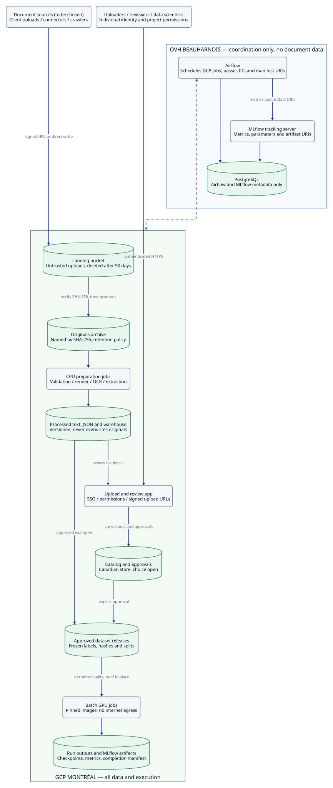

Munera infrastructure planning
Quote for Vertex AI
Current large-model candidate: Qwen3.5-122B-A10B, with Qwen3.5-27B as the fallback/comparison. This replaces the former dense Qwen3-VL-32B reference in the current extraction plan. The supporting services remain; the large-model compute and checkpoint budget must be requalified.
What model is being replaced?Monthly cost assumptionsArchitecture & network perimeterWhole-stack Data Requirements
Current model replacement and scope
| Responsibility | Previous plan | Current plan |
|---|---|---|
| Large-model document extraction | Qwen3-VL-32B-Instruct was the dense multimodal sizing reference. | Qwen3.5-122B-A10B is now the primary candidate for this same role: text/image inputs → grounded structured extraction. This is a planning replacement, not a deployed or fine-tuning-qualified model. |
| Lower-cost alternative | The older extraction shortlist also included Mistral-Small-3.2-24B, Luciole-23B and Granite-4.2-30b. | Qwen3.5-27B is the current fallback/comparison and first adapter experiment. The old shortlist remains historical research, not four additional active training/serving allocations. |
| Classification, OCR and retrieval | XLM-R / CamemBERTav2; LightOnOCR / PaddleOCR-VL; TableFormer; BGE-M3; LightOn PW. | Unchanged. A multimodal extraction model does not automatically replace these task-specific components. Consolidation would require a separate measured comparison. |
| Process validation | 22 deterministic reconcilers and Temporal application workflows. | Unchanged. Models extract facts and evidence; code applies joins, dates, arithmetic and thresholds. Do not replace validation rules with a model's judgement. |
Consequences: retain the same reviewed extraction corpus and locked evaluation for 122B and 27B; do not multiply the document count by parameter count. Re-measure GPU/host memory, quantization, image/token limits, training time, cold/warm inference, checkpoint bytes and restore time. The old 32B single-GPU profile and weight-storage ledger do not qualify the 122B MoE.
Monthly estimate: explicit partial budget
Supporting-service assumptions: one Canadian primary region, 730 hours/month for always-on services, two L4-class small-model serving allocations, 160 L4-class training hours, 100 pipeline runs, modest storage/telemetry and 500 GiB outbound internet traffic. USD figures are the earlier rounded planning allowances, not Toronto SKU quotations. CAD conversion uses an assumed 1 USD = 1.35 CAD, not a live exchange rate.
| Supporting component | Basis | USD/month |
|---|---|---|
| Application workers + GKE | Approximately 16 vCPU / 64 GiB aggregate + one cluster fee | 673 |
| Cloud SQL + Vector Search | Small non-HA SQL instance and small index-serving allowance | 400 |
| Small-model training | 160 hours × $1.40/hour L4-class worker allowance | 224 |
| Small-model serving | 2 × 730 hours × $1.40/hour; separate from large-model extraction | 2,044 |
| Storage, registry, observability and security | Existing bounded pilot allowance; incremental 122B checkpoints and revised corpus storage need repricing | 250 |
| Private networking + internet outbound | $150 connectivity allowance + 500 GiB × $0.12/GiB outbound | 210 |
| Pipelines + CPU batch work | 100 × $0.03 orchestration + $80 preprocessing/ODM allowance | 83 |
| Supporting-service subtotal, excluding large-model inference and training | 3,884 | |
| 122B inference sensitivity | Reported two-H100 Spot reference | Partial total including CAD$5,243.40 supporting services |
|---|---|---|
| Scheduled evaluation / batch use | 160 allocation-hours × CAD$17.60 = CAD$2,816 | CAD$8,059.40/month before missing items; CAD$9,671.28 with a 20% contingency on priced items only. |
| Full-month inference allocation | 730 allocation-hours × CAD$17.60 = CAD$12,848 | CAD$18,091.40/month before missing items. Spot interruptions mean this is not an availability/SLA commitment. |
Not priced in these totals: 122B/27B fine-tuning runs, verified Vertex management/serving premiums for the selected GPU allocation, incremental model/checkpoint and revised dataset storage, HA/independent production environments, paid support, engineering and taxes. No zero-cost assumption is made. Obtain the exact Canadian machine/purchase mode, quota, billable runtime and a train/save/reload benchmark before turning this into a complete procurement quote. The two-H100 rate must not be divided or multiplied into a presumed training configuration.
Replica arithmetic: one reported two-H100 allocation is CAD$17.60/hour. Four such replicas use eight H100s and cost CAD$70.40/hour at that same rate: three hours is CAD$211.20, not CAD$52.80. Model loading, downloads, retries and warm-up consume billable allocation time; a quoted 90-minute cold start is not a measured training duration.
Ingress, egress and private network charges
Incoming bytes are generally free, but processing/storage operations may be charged. Same-region GCS reads generally avoid transfer charges; cross-zone VM traffic is typically $0.01/GiB, North American inter-region transfer $0.02/GiB, and low-volume internet export approximately $0.12/GiB. PSC service endpoints typically add $0.01/endpoint-hour and $0.01/GiB processed in both directions. The global Google APIs PSC bundle has no PSC data fee; PSC interfaces have processing fees but no hourly interface fee. Open-source software does not waive these network charges.
Sources: Vertex AI pricing · GKE · Cloud SQL · Storage · Network and PSC. The CAD Spot reference is supplied by the team and must be confirmed for this deployment; it is not a published Google tariff.
Architecture and network perimeter for the quote
Vertex-native alternative: use Google-managed ML lifecycle services. Vertex AI Pipelines, Experiments/ML Metadata, Model Registry and Vector Search replace the corresponding lab responsibilities in this option; they are not deployments of Airflow, MLflow or Qdrant. We retain our model code, evaluation rules, human approval and application workflows.
![D2 architecture: controlled import outside a VPC Service Controls perimeter; regional artifact stores inside it; Munera customer VPC on the left and Google-managed Vertex AI on the right. Private Google API access points right, PSC interface egress points left, and prediction and vector-search PSC connections point right. Vertex Pipelines launches Custom Training, which logs to Experiments and passes evaluated, human-approved models to Model Registry and private Prediction Endpoints. Temporal stays in Munera's application.](diagrams/09-vertex-ai-key-modules.svg)
1. Alternative managed-service replacements — not co-deployed tools
| Open-source lab role (comparison only) | Google-managed choice in this alternative | What changes / what stays ours |
|---|---|---|
| Airflow: ML experiment and training DAGs | Vertex AI Pipelines | Our versioned pipeline prepares and validates data, launches training, evaluates the result and coordinates release steps. Replace Airflow for these ML DAGs; do not also run Composer/Airflow for the same pipeline. |
| Shared GPU training workers | Custom Training / Custom Jobs | Run our pinned PyTorch, Paddle, FlagEmbedding or PEFT containers on qualified GPU shapes. Vertex provisions execution; it does not supply one universal trainer for every model. Two-/four-job concurrency becomes separate job allocations and quotas. |
| MLflow: runs, parameters, metrics and provenance | Experiments + ML Metadata | Record dataset/base-model revisions, recipe, metrics and produced artifacts. Compare candidates. TensorBoard is optional for training curves. Dataset bytes remain in Cloud Storage. |
| MLflow: approved model versions | Model Registry | Register the approved model, adapter/base relationship, processor and serving container. The evaluation and human-approval gate is our release logic, not an automatic Vertex decision. Registration is not deployment. |
| vLLM / classifier / OCR / retrieval model servers | Prediction Endpoints with custom containers | Deploy the selected runtime to dedicated private endpoints. Configure health/prediction routes, GPU/CPU capacity and rollback. The application calls the approved release; no public model endpoint is needed. |
| Qdrant: retrieval index | Vector Search | Use BGE-M3 dense vectors, a private IndexEndpoint and tenant filters. Offline Custom Jobs encode passages; a pipeline builds/updates the index. Promote encoder + index together. This is a migration requiring recall/filter parity, not a Qdrant-compatible API. Multi-vector late interaction needs separate qualification. |
| Git / DVC / artifact storage / OCI registry | Keep Git + DVC; use Cloud Storage + Artifact Registry | Git stores recipes/configuration; DVC identifies datasets; GCS stores documents, weights, adapters and reports; Artifact Registry stores pinned containers. These are supporting services, not Model Registry substitutes. |
| Temporal / application SQL / deterministic reconcilers | Keep Temporal and CPU application workers; Cloud SQL | GKE runs long-lived Temporal/application workers; the Cloud Run API can reach them through its configured VPC path. SQL persists application and workflow state. The 22 deterministic reconcilers remain CPU code. Vertex Pipelines does not replace Temporal. |
| Prometheus / OTel / logs / audit / secrets / recovery | Cloud Monitoring, Logging, Trace; IAM, Secret Manager, KMS; backup storage | Retain telemetry and immutable audit responsibilities. Use managed Prometheus where needed. Explicit retention, independent Canadian recovery, access tests and restore proof remain required. |
2. Three different private network paths—not one “Vertex VPC”
| Path in the diagram | Direction and mechanism | Why we need it |
|---|---|---|
| A · Control / Google API access | Munera VPC → PSC endpoint for Google APIs, restricted API bundle and private DNS. | Submit/manage pipeline jobs and access supported Google APIs without ordinary public internet routing. IAM and VPC-SC still authorize the caller. The same pattern applies to registry/control-plane APIs; the diagram shows Pipelines as the example. |
| B · Training private egress | Google-managed training/pipeline execution → PSC interface → network attachment in Munera's VPC. | Only when a job needs an approved private destination. It is the opposite direction from a prediction endpoint. Google API traffic from managed training is normally resolved producer-side, so do not assume all GCS/Artifact Registry calls traverse our VPC. |
| C · Production inference / retrieval | Munera workers → separate PSC consumer endpoints → prediction and Vector Search service attachments. | Private inference and private index queries. The application performs tenant authorization and coordinates retrieval/reranking. These connections do not give a prediction container arbitrary private egress to SQL or other services. |
The perimeter protects supported APIs/resources, not every packet or every runtime. Customer firewalls, IAM, workload identities and application ACLs remain separate controls. Run controlled imports in a separate trust boundary and promote approved artifacts through narrowly scoped ingress rules. Keep production data/secrets out of experimental identities. For development, staging and production, define distinct projects, principals and perimeter policies; do not put them in one permissive shared perimeter.
Canadian placement: propose Toronto for the new ML resources; Google's current matrix lists L4/H100 and the core ML services there. Existing Montréal application resources are not automatically moved. Confirm exact regional GPU shape/quota, supported serving purchase mode and cross-region PSC access before deployment. No overseas fallback is implied.
3. Our models run inside that same lifecycle
- Classification: XLM-R / CamemBERTav2 → supervised Custom Job → classifier endpoint.
- Document vision: LightOnOCR or PaddleOCR-VL → evaluate first, adapt if needed → OCR endpoint. TableFormer stays a separately qualified CPU component.
- Retrieval: BGE-M3 → passage/query embeddings → Vector Search; LightOn PW → reranking endpoint. Reranking is not performed by the vector database.
- Extraction: Qwen3.5-122B-A10B is the current primary candidate replacing the Qwen3-VL-32B reference; Qwen3.5-27B is the fallback/comparison. They share one extraction role and dataset, not two mandatory serving deployments. Training hardware and the reported two-H100 Spot inference allocation require separate qualification.
Optional, not required initially: Workbench for notebooks, Vizier for bounded tuning searches, TensorBoard for curves, and Model Monitoring for supported production monitoring. Custom frozen evaluators still measure OCR, retrieval and extraction quality. Model Garden is discovery/deployment tooling, not proof that every exact checkpoint has a managed tuning recipe. Gemini, AutoML, Feature Store and RAG Engine are not prerequisites for this architecture.
Documentation behind the network boundaries
- Vertex AI networking overview: Google API access, PSC endpoints, PSC interfaces and PSA
- VPC Service Controls with Vertex AI
- Training PSC interfaces: producer-side API access and internet-egress behavior
- Configure PSC interfaces for Pipelines
- Dedicated private prediction endpoints: service attachments and limitations
- Private Service Connect for Vector Search
- Regional feature and accelerator availability
- Our source: shared infrastructure · ML workflow and release requirements · D2 diagram language
Acquisition plan · estimates, not measured minimums
Data Requirements
Whole-stack requirements, independent of the hosting provider. Classification, OCR, table parsing, retrieval, extraction and process validation each have their own labels and qualification gates. Start extraction with 3,000 reviewed documents; expand toward 10,000 only when the learning curve justifies it.
3,000 documentsExtraction pilot: 2,000 train / 500 development / 500 locked test.
10,000 documentsExpanded extraction: 7,000 train / 1,000 development / 2,000 locked test. Includes the pilot.
One shared corpusReuse approved source PDFs and page images across tasks; count task-specific labels separately.
Per-model splitsDocument qualificationProcess validationStorage & effortSources & limits
1. Per-model acquisition and split
Extraction arrows mean pilot → expanded programme. Other rows retain the source guides' base planning quantities. Do not sum documents + pages + queries + pairs: they measure different things.
| Model / component | Unit | Train | Development | Locked test | Required supervision / qualification |
|---|---|---|---|---|---|
| XLM-R large | Documents | 11,000 | 2,200 | 4,400 | Type label across 110 types; phase label where applicable. Total 17,600. Assess per-type recall, macro-F1, unknown classes and French/English slices. Forty test documents/type is screening, not rare-error certification. Source plan. |
| CamemBERTav2 base | Same classification documents | 11,000 | 2,200 | 4,400 | Alternative on the same 17,600-document split, not another acquisition budget. Qualify French coverage and any English/bilingual use separately. Eight phase labels do not multiply the document count. |
| LightOnOCR-2-1B Adapt LightOnOCR-2-1B-base | Annotated pages | 12,000 | 1,500 | 1,500 | Page image → reviewed text/markup, reading order and tables where required. Evaluate first; fine-tune only if needed. CER/WER, critical digits and table structure; qualify fine print at the selected rendering resolution. Source plan. |
| PaddleOCR-VL-1.6 | Same OCR pages | 12,000 | 1,500 | 1,500 | Alternative using the same approved page split; convert labels for its ERNIEKit SFT route. This does not establish training support for the separate layout/ranking models. |
| Docling / TableFormer | Table crops with structure labels | Not planned | 250 | 500 | New evaluation allowance, not an upstream minimum. Annotate cells, row/column spans, headers and values on eligible pages from the matching OCR splits. Test TEDS/cell accuracy and CPU runtime. No TableFormer fine-tuning programme selected. |
| BGE-M3 | Queries with relevance judgements | 4,000 | 1,200 | 1,200 | Query + positive passage + reviewed hard negatives. Evaluate untuned first. Recall@k, nDCG and tenant-filter correctness against the intended search corpus. The 105,600 indexed passages are not 105,600 labelled queries. Source plan. |
| LightOn-rerank-PW-2B | Query–passage pairs | 16,000 | 4,800 | 4,800 | Derived allowance: one positive + three negatives per query from the BGE split; not independent questions. Yes/No relevance supervision, fixed templates, separately qualified image pairs. Evaluate the full retrieval/reranking pipeline at production candidate depth, not only four curated candidates. |
| Qwen3.5-122B-A10B Primary extraction candidate | Extraction documents | 2,000 → 7,000 | 500 → 1,000 | 500 → 2,000 | Replaces the dense Qwen3-VL-32B reference in the current plan. 122B total / 10B active MoE. Reviewed schema-valid JSON + field evidence, with text/images as deployed. Compare untuned first; qualify any adaptation separately. Two-H100 inference is not training-fit evidence. |
| Qwen3.5-27B Fallback / comparison | Same extraction documents | 2,000 → 7,000 | 500 → 1,000 | 500 → 2,000 | First adapter experiment to test whether the cheaper candidate meets the same acceptance gates. Reuse the 122B gold labels and held-out cases, with its own processor and recipe. This is not another 10,000-document collection or an automatically qualified L4 training configuration. |
Coverage limit: the 3,000-document extraction pilot targets 3–5 priority families; the 10,000-document programme targets roughly 10–20, subject to schema/risk coverage. The classification taxonomy's 110 types are not automatically 110 extraction schemas. If all need distinct behaviour, a provisional 100–300 training documents/type already implies 11,000–33,000 training documents, before holdouts. This is a coverage sensitivity, not a guaranteed minimum.
Shared-source accounting: extraction documents may be selected from the classification corpus; OCR uses their pages and retrieval uses their passages. Preserve one global project/document-lineage split across model families. A document locked for end-to-end testing must not train an upstream OCR model, classifier, reranker or extraction adapter. Exact cross-task overlap is not yet measured.
2. Qualifications for every accepted document
A PDF is eligible for training only after permission, lineage, input and label checks pass. A difficult or unreadable page may remain as a deliberately labelled abstention case; it must not be given an invented answer.
- Permission and provenance. Record source ID, checksum, project/tenant, issuer, version/date, permitted training/evaluation use, residency and retention. Keep annotation and model-assisted labelling inside the approved perimeter; no unapproved external API uploads.
- Coverage labels. Record document type/schema, French/English/bilingual status, template/issuer, digital versus scanned origin, page count, scan quality, tables and rare conditions. Track missing fields, conflicting values, amendments and genuinely unanswerable cases. Do not substitute thousands of near-identical invoices for coverage.
- Stable input preparation. Retain original PDFs and version rendering/OCR code, page order, crop transforms and resolution. Train on the input quality production will see. Keep manually corrected-text evaluations as a separate diagnostic, not the production score.
- Reviewed labels. Store schema version, raw and normalized field values, units/currency, and field-level evidence (page + text span or bounding box). Define absent, illegible, conflicting and not-applicable outcomes. Preserve source inconsistencies; do not silently “fix” totals or dates in gold extraction labels.
- Human qualification. Calibrate reviewers on a first 100-document batch; measure disagreements and adjudicate them. Independently second-review the locked test set and critical financial/legal fields. Proposed training QA: second-review at least a random 20% sample plus disputed/high-risk cases; expand review if disagreement is material. Model-generated labels are drafts, not ground truth.
- Leakage control before augmentation. Deduplicate exact and near-duplicates. Group pages, chunks, revisions, translations and synthetic derivatives by original lineage; split by project/issuer/time as appropriate. Hold out unseen projects/templates where generalization is required. Never mine training negatives or synthetic prompts from the locked test.
- Model-ready record. Include input text/image references, instruction/schema and reviewed target in the selected trainer's JSONL format. Log processor-expanded input length, target length, image tokens and truncation. Chunk with enough evidence; never require an answer whose source was cut away. Freeze tokenizer, chat template, preprocessing and dataset revision.
Acquisition allowance: at an assumed 80% acceptance rate, source 12,500 candidates to obtain 10,000 accepted extraction documents. This is not an observed rejection rate. Existing approved documents can satisfy that pool; it is not automatically new collection.
3. Extraction quality is separate from process validation
Proposed rule-test allowance: 20–50 meaningful cases per reconciler = 440–1,100 cases. Include correct matches, true mismatches, values below/at/above boundaries, missing/conflicting evidence, wrong entity/currency/unit/version, duplicates and out-of-order documents. These are regression fixtures, not SFT examples; branch coverage and risk may require more.
For cross-document processes, retain reviewed bundles and expected pass / fail / insufficient evidence outcomes. Test rules with gold facts first, then the complete pipeline from original documents. Reuse source files without leaking test bundles into training.
| Gate | Evidence required before promotion |
|---|---|
| Extraction correctness | Exact/normalized critical amounts, dates and identifiers; field recall; invented-value rate; evidence-attribution accuracy; table row/cell and whole-document acceptance. Valid JSON alone is not correctness. |
| Coverage and safe handling | Report by document family, language, issuer/template and scan quality. Measure abstention/human-review rate alongside accuracy so rejecting everything cannot appear successful. |
| Process outcome | False approvals and missed discrepancies on reviewed document bundles; inspect every critical failure. Domain owners set numeric acceptance thresholds before model selection. |
| Learning curve | Compare untuned candidates, then nested 500 / 1,000 / 2,000 / 4,000 / 7,000 training-document subsets on development data. Keep preprocessing and evaluation consistent; collect targeted failures instead of blindly increasing volume. |
| Release and reproducibility | Locked test only for selected releases; record dataset/model/container revisions, recipe, metrics, peak memory, throughput, train/save/reload and private-endpoint smoke proof. Human approval precedes registration/deployment and rollback remains explicit. |
Statistical limit: with zero failures in 300 independent, representative cases, the one-sided 95% upper failure bound is still about 1%; approximately 3,000 zero-failure cases are needed for a 0.1% bound. Calculation: upper = 1 − 0.05^(1/n). Correlated fields/pages are not independent cases, and an overall sample does not certify rare document types. Repeatedly tuning against a test set invalidates its held-out role.
4. Storage, work and preparation budget
This is an illustrative extraction-corpus scenario, not a replacement for measured file statistics or the complete platform storage ledger.
| Asset | Explicit assumption | Decimal GB |
|---|---|---|
| Original documents | 10,000 PDFs × 2 MB average | 20 |
| One rendered page set | 10,000 documents × 5 pages × 2 MB/page | 100 |
| Labels and manifests | 10,000 documents × 50 KB | 0.5 |
| Primary corpus | PDFs + page renders + labels | 120.5 |
| Primary + two full backup copies | 3 × 120.5 GB | 361.5 |
Exclude model weights, adapters, optimizer checkpoints, OCR caches, extra versions and temporary workspace from this table; budget those separately. Replace overlapping source/image allowances in the existing ledger—do not add the same PDFs twice. A shared corpus is not another full copy per model. Backup frequency and changed bytes determine transfer charges, not just the number of retained copies.
Annotation sensitivity: 5–15 minutes per accepted document gives approximately 830–2,500 first-pass hours for 10,000 documents, before second review and adjudication. Complex multipage documents may take longer. Time the calibration batch before committing staffing or cost.
Training-work sensitivity: 7,000 accepted training records × 4,000–8,000 average processor-expanded positions × 3 epochs = 84–168 million processed positions if there is one record/document. Chunking, padding and augmentation change record counts and work. This is not GPU-hours: measure the exact recipe's step time, memory, checkpoint and evaluation overhead. Do not use advertised maximum context or inference tokens/s as a training-time estimate.
5. Evidence and model-selection boundaries
- Classification guide: 110-type coverage plan, 11,000 / 2,200 / 4,400 documents; these are acquisition assumptions, not measured adequacy.
- OCR guide and LightOn's Arabic adaptation: 12,000 synthetic pages in that published adaptation; our 1,500 / 1,500 holdouts are policy, not the publisher's split or proof of French accuracy.
- Retrieval guide and MIRACL: 4,006 French+English training and 1,142 development queries inform our rounded acquisition plan; independent test queries and pair counts are our design.
- AWS / Apoidea: reports useful Qwen2-VL-7B adaptation with a few thousand task-specific samples. Different model, table task and corpus; not a Qwen3.5-122B minimum or transferable accuracy result.
- FinQA: 6,251 / 883 / 1,147 question-answer examples across 2,789 report pages. The older large-model guide uses that scale as an analogue. It is not 8,281 independently annotated documents. The new 3,000 / 10,000-document extraction programme above is an explicit planning recommendation, not a revised historical FinQA split.
- Qwen3.5-27B and Qwen3.5-122B-A10B: compare on the same reviewed cases; total parameter count alone does not set dataset size. Other project benchmarks and cold-start estimates do not establish performance here.
- Qwen3.5 training/data preparation in ms-swift: model-specific dense/MoE training and multimodal JSONL formats. This is not evidence that a particular two-GPU recipe fits.
Current decision: Qwen3.5-122B-A10B is the primary extraction candidate and Qwen3.5-27B the fallback/comparison. Compare both untuned; use the smaller model for the first adapter experiment, then escalate only for a measured quality gap. This supersedes the old shortlist for current planning, without claiming a production deployment or extending an inference benchmark into training evidence.
OVH + GCP Deployment
Status: proposed implementation specification; not a deployed system, compliance attestation, capacity reservation, or training-readiness approval.
Primary decision: establish the data lake and quantify invoice data readiness before allocating training GPUs. OVH owns canonical data and the platform control plane; GCP supplies bounded, on-demand GPU execution. MLflow tracks experiments; Airflow coordinates work; neither replaces document review or dataset governance.
Configuration: MLflow tracks experiments. Version-controlled YAML defines workload configuration consumed by reviewed launcher code; Airflow DAGs remain versioned Python DAGs.
1. Scope, evidence, and decisions
1.1 Architecture alignment
The shared-infrastructure design, updated 24 September 2026, is the architectural baseline. Preserve its separation of platform services, GPU execution, controlled import, identity, SQL metadata, artifacts, and recovery. Its service boxes do not mandate one host each.
| Baseline responsibility | Decision for this deployment |
|---|---|
| Canonical data and dataset versioning | Private OVH BHS object storage, a PostgreSQL catalog, immutable release manifests, Git-managed code/schema/configuration; DVC may later index released assets, not become a second approval system |
| Experiment tracking and model registry | MLflow on OVH; separate PostgreSQL database/user; OVH object storage for durable experiment artifacts |
| Training and experiment coordination | Airflow on OVH; lightweight orchestration tasks, separate CPU preparation worker, remote GCP Batch jobs |
| GPU execution | GCP Canadian region selected per qualified recipe and actual capacity; no distributed training across OVH and GCP |
| Controlled import | Dedicated preparation/transfer worker, isolated from SQL and platform administration |
| Identity and network edge | Authenticated HTTPS interfaces, explicit project authorization, separate human/workload identities |
| Temporal | Deferred: no application workflow-history requirement in the invoice data-readiness milestone |
| Qdrant | Deferred: no retrieval/indexing requirement in the initial invoice dataset workflow |
| Metrics, logs, and recovery | Bounded operational telemetry and tested backup from the start; full observability stack only when justified |
| Kubernetes | Not required for the controlled pilot; use isolated VM/container services with pinned deployments |
The baseline's 24-CPU/64-GiB allocation and storage ledgers describe a broader, different workload scenario. They are not measured requirements for this pilot. Its Qwen3-VL-32B examples must not size Qwen3.5-122B-A10B.
1.2 Existing-data evidence
The following is the earlier read-only session inventory, not a fresh cloud audit performed while writing this specification. Reconcile it at import because source systems are live. Sizes are decimal GB.
| Observation | Consequence |
|---|---|
| GCP raw-ingestion bucket: 782 objects, approximately 3.14 GB, including 590 PDFs | Existing files are available; lack of a training dataset does not mean lack of documents |
| The evaluation corpus contains the same 771 unique MD5-and-size signatures as the raw corpus | Do not count the copied corpus twice; perform canonical SHA-256 verification during import |
| Latest extraction records contain 191 candidate invoice IDs | This is not an approved invoice count and does not establish the previously discussed 201-document cohort |
| candidate SFT bucket includes batch requests and Gemini prediction outputs | Its name does not establish supervised ground truth |
| Latest review-task snapshot: 210 tasks, none SFT-eligible; a reviewed invoice flag is associated with a fixture-like ID and missing reviewer | Review provenance and test-data separation must be repaired before releases |
| Sparse human evaluation exists, but no trusted invoice training release was established | Do not discard all prior review; reconcile it individually against sources and reviewers |
| Source URI linkage is incomplete in inspected tables | Missing table links are not proof of missing originals; reconstruct mappings |
Prior infrastructure observations: BHS object storage was available and no BHS S3 buckets were listed in the OVH project; GCP Batch was not enabled; Canadian H100 allocation was not established. These are preflight inputs, not current provisioning guarantees.
1.3 Non-goals of the first deployment
No fine-tuning, permanent GPU, public unauthenticated notebook, production inference SLA, petabyte-scale lakehouse, blanket migration/deletion, or automatic acceptance of generated labels. No claim that supplier SOC reports cover our application controls. This artifact authorizes no resource creation by itself.
2. Target topology and trust boundaries

GCP workers receive no OVH administrative credentials, database credentials, raw-lake access, or MLflow privileged token. They consume only the release subset staged for the job and write only authorized run outputs. The OVH transfer/orchestration services import verified results and publish tracking information. This avoids exposing the entire OVH platform to arbitrary training code.
The GCS staging copy is an execution cache, not a second independently editable dataset. Retained checkpoints stay in GCP until verified import completes; temporary resources are not deleted merely because the training process exited.
3. Phase-one infrastructure and interfaces
3.1 Minimal placement
Use two trust boundaries, even for the pilot:
- Platform VM: authenticated UI/API, PostgreSQL, and later MLflow/Airflow. Proposed starting planning envelope: 8 vCPU, 32 GiB RAM, 100 GiB usable encrypted block storage. This is not a provider SKU, benchmark, or HA deployment. Recheck before adding Airflow or increasing concurrency.
- Preparation/import VM: document parsing, rendering, local OCR, checksum/import tasks. Proposed initial envelope: 4 vCPU, 16 GiB RAM, 100 GiB capped encrypted scratch. One preparation job at a time initially; enforce page, decompression, time, memory, and disk limits. Increase only after measurement.
- OVH BHS object storage: usage-based canonical storage, not an arbitrary TB reservation. Provider endpoint observed previously:
https://s3.bhs.io.cloud.ovh.net/. - No GCP GPU resources in phase one. Model-assisted cleaning, if later justified, is a separately bounded job, not a hidden dependency of uploads.
Container isolation on a shared platform VM is a pilot compromise, not a hard tenant boundary or production HA. Parsing untrusted documents remains off the SQL/control-plane VM. Do not expose a host Docker socket to upload handlers or workload code.
3.2 Logical endpoints
Actual DNS names are selected under the organization's existing domain before exposure; none are live URLs in this specification.
| Interface | Audience | Exposure |
|---|---|---|
| Data portal | Uploaders, reviewers, authorized data scientists | HTTPS behind SSO/MFA and per-project authorization |
| MLflow UI/API | Approved research group and trusted importer | Authenticated access; one trust group initially; no anonymous tracking |
| Airflow UI/API | Operators only | VPN or identity-aware access; not an uploader interface |
| PostgreSQL | Specific platform services | Private network only; separate databases/users for catalog, Airflow, MLflow |
| Object storage | Trusted services and narrowly authorized clients | Private buckets; short-lived, object-specific presigned access where needed |
| GCP Batch and GCS APIs | Dedicated workload identities | Authenticated outbound API calls; no inbound GCP callback required |
A public HTTPS hostname does not mean publicly readable documents. Presigned URLs must not appear in logs, analytics, or persistent manifests.
3.3 Upload and review application
First assess the existing GCP-backed HITL application for reusable upload, invoice display, field correction, and identity features. Do not assume it already enforces the needed approval/provenance rules. If reused, configure the new deployment's catalog and bytes in Canada; the previously observed Firestore nam5 location is not a Canadian regional catalog.
Required behavior:
- User signs in and receives project-scoped permissions.
- Upload session captures source, project/client, intended use, permission-to-train status, and an optional source-system identifier.
- Upload lands in quarantine through a server-authorized single-object or multipart upload. Browser access never includes permanent storage credentials.
- Completion checks object existence, expected size, checksum, and ownership. The server schedules validation; an interrupted upload cannot appear as a ready document.
- Original and derived pages are displayed securely; extraction fields can be corrected with source evidence.
- Draft, reviewed, approved, rejected, and superseded revisions are distinguishable. Approval records an authorized approver, timestamp, and exact revision.
- Data scientists can inspect permitted documents and export approved releases with manifests.
No requirement to introduce Label Studio if the current UI can satisfy this contract. If used, an annotation canvas is not sufficient by itself: SSO, project access, approval history, and authorization must be explicitly supplied and tested.
4. Lake layout, catalog, and permissions
4.1 Logical storage zones
Bucket names below are roles, not created resources. Use separate buckets for materially different access boundaries; prefix naming alone is not authorization.
| Zone | Durable content | Write authority |
|---|---|---|
| Intake/quarantine | Untrusted uploads, rejection evidence | Upload service; validation worker within assigned work |
| Raw | Original bytes and source accession manifests | Promotion service; no routine end-user overwrite |
| Prepared | Page images, embedded/OCR text, coordinates, quality reports | Preparation worker, version-specific output paths |
| Annotations | Canonical labels, revisions, evidence and decisions | Review service |
| Releases | Approved frozen manifests, splits and training/evaluation views | Release publisher only |
| Experiments | Metrics, reports, adapters, checkpoints and model manifests | Trusted artifact importer/MLflow service within its boundary |
| Backup/audit | Recoverable catalog snapshots, necessary objects, access/change records | Dedicated backup/audit identity; no ordinary workload delete |
Enable encryption and versioning where appropriate and test denial of anonymous access. OVH's S3 feature set is not identical to AWS: use supported OVH identities/policies and private ACLs; do not assume AWS bucket policies, Block Public Access, KMS, or native bucket notifications are portable. Upload-completion API plus periodic inventory reconciliation is sufficient; no object-event dependency is assumed.
Raw bytes and published releases are logically immutable: changes create a new version/release. This is not WORM. Define legal retention, withdrawal, deletion, backup treatment, and any retention locks before enabling irreversible policies.
4.2 Catalog contract
Minimum entities:
document: stable ID, project/access scope, SHA-256, original URI/object version, byte size, MIME type, source, uploader, timestamp, training-use permission and document category.source_accession: provenance for each appearance of a document, including legacy GCP object generation and table references; deduplication never erases source relationships.document_family: duplicates, near-duplicates, revisions, attachments and common parent documents; restricted membership across client boundaries.preparation: document version, tool/container digest, configuration hash, page count, derivatives, execution metrics and failure/quality flags.annotation_revision: schema version, field values and statuses, source evidence, draft producer, annotator, reviewer/approver, timestamps, correction reason and supersession.dataset_release: exact document/preparation/annotation revisions, permissions snapshot, split map, exclusion reasons, manifest hash and approval.execution: logical run ID, release/config/model identifiers, provider job/attempt IDs, state, artifacts, metrics and cost attribution.
Object storage contains bytes; PostgreSQL indexes identity, permissions and workflow state. Airflow state does not constitute label approval. MLflow run IDs do not constitute dataset identity.
4.3 Human roles
Uploader can submit and inspect permitted submissions; annotator can edit draft labels; reviewer/approver can approve authorized revisions; data scientist can consume permitted releases and request experiments; platform administrator manages infrastructure. Separate approval from initial annotation for calibration and high-risk examples. Record any approved pilot role overlap. Test cross-project denial, not merely successful login.
5. Data discovery and preparation experiment
5.1 First questions to answer
- How many unique, source-linked, permitted invoices exist, rather than objects or extraction rows?
- Which are native-text PDFs versus scans/photos? Which languages, vendors, templates, page counts and quality levels occur?
- Which fields are actually present and readable? How often are pages or attachments missing?
- How much usable text is obtained without OCR? What is the incremental value and cost of OCR?
- How much human correction is required, by field and document stratum?
- Which existing human reviews are recoverable and trustworthy?
Do not collapse these into a single unexplained quality score.
5.2 Preparation stages
- Accession: inventory authorized source objects and metadata; import without modifying/deleting the GCP originals; verify SHA-256, source generation and destination version. Record fixtures and unreachable links as separate categories.
- Safety validation: MIME sniffing, file integrity, malware checks, encrypted-file handling and bounded archive/PDF decoding. Unsupported or suspicious files remain quarantined with reasons.
- Lightweight corpus profiling: deduplication, page count, language/layout indicators, embedded-text presence, invoice/attachment classification and provenance completeness. Classification predictions remain provisional.
- Representative preparation sample: proposed initial working batch of up to 50 unique invoices, selected across available languages, scan quality, page count and vendor/layout families. This is a planning batch, not a statistical guarantee. Include difficult cases rather than selecting only clean text PDFs.
- Paired preparation comparison: embedded text alone versus embedded text plus OCR where warranted; preserve original images and page order. Record OCR engine/version, rendering settings, coordinates and time/memory/scratch usage. Apply deskew/rotation/cleanup only as versioned derivatives; never overwrite evidence.
- Review calibration: proposed up to 20 documents independently reviewed by two people, then adjudicated. Record disagreements and correction time. Increase sampling where disagreement or coverage gaps remain. Do not extrapolate a deliberately difficult sample to the entire corpus without weighting by the measured strata.
- Preparation decision: retain the least costly route that preserves required evidence and meets a documented, task-specific readability/labeling standard. Route difficult documents to manual repair, alternate preparation or exclusion with a reason; do not silently discard them.
All initial parsing/OCR stays on approved Canadian compute. A cloud OCR API, model-assisted cleanup, or human annotation vendor requires a separate data-use decision. Generated text must not replace the original evidence.
5.3 Invoice schema and annotation rules
Version the extraction contract before mass annotation. Cover supplier/customer, invoice number, issue/due dates, currency, purchase-order references, subtotal, discounts, tax components, total, amount due, and repeatable line items (description, quantity, unit, price, tax and amount).
Store raw source values separately from normalized values; money uses decimal strings with explicit currency. Distinguish absent, unreadable, ambiguous and not-applicable fields from empty strings. Preserve page/region or text-span evidence. Multiple invoices in one PDF receive explicit child identities without splitting related examples across dataset partitions.
Arithmetic checks produce discrepancy flags, not “corrected” ground truth. Do not infer tax identifiers, missing dates or amounts merely to satisfy a schema. Record draft model/version/prompt if machine-generated labels are used; retain that provenance after human correction.
5.4 Required readiness report
| Measure | Required output |
|---|---|
| Inventory and provenance | Unique documents/pages/bytes by category; duplicate families; linked/unlinked originals; permission status; fixture exclusions |
| Source quality | Native text vs scans; unreadable/encrypted/corrupt files; language/layout/page-count strata; missing pages |
| Preparation effort | Success/failure by route and stratum; runtime, peak RAM/scratch and derivative bytes/page; manual repair time |
| Label readiness | Draft/reviewed/approved counts; reviewer provenance; unresolved disagreements; required-field coverage |
| Review quality | Field-level agreement under documented normalization, line-item alignment agreement, adjudication outcomes; uncertainty/sample denominators |
| Training shape | Expanded token/page/image distributions using the actual model processor; overlength examples and handling policy |
| Recommended next action | Collect missing categories, repair links, change preparation, annotate more, or approve a bounded training release |
Estimate annotation effort from measured minutes/document by stratum, not bytes. Estimate retained storage from actual source bytes plus measured derivatives, labels, release changes, artifacts, and backup policy. Report GB and GiB distinctly. No TB-scale commitment is justified by the current inventory alone.
6. Dataset releases and evaluation contract
A training release requires all included examples to have readable source evidence, traceable preparation, approved annotation revisions, valid use permissions, a declared schema and reproducible split membership. Zero fixture records and zero known cross-split duplicate-family overlaps are allowed. Invalid examples are excluded with reasons rather than causing silent truncation or substitution.
Canonical labels are provider/trainer-neutral JSON; manifests and analysis tables can be JSONL/Parquet. Images are referenced as versioned objects, not embedded repeatedly as base64 in every table. Generate the selected trainer's conversational format from canonical labels and record the converter version.
Choose split strategy before tuning. Hold out document families and relevant project/vendor/layout groups; random page splits are prohibited. Select exact proportions after available group counts are known. A very small corpus may support a development/calibration release but cannot support a credible broad-generalization claim. Keep the final test set inaccessible to routine training jobs and obtain predictions through a separate evaluation identity/job.
Evaluate approved output JSON with schema validity, normalized field precision/recall or exact match as appropriate, amount/date/currency correctness, line-item alignment, missing/unsupported value rates, and source attribution. Report per-stratum results, sample sizes and uncertainty. Separately measure runtime, throughput, peak VRAM, failure rate and cost/document. Human or model-grader preference alone is not a substitute for field evidence.
7. MLflow, Airflow, and YAML responsibilities
7.1 MLflow on OVH
Deploy after upload and provenance work, initially to record preparation comparisons and baseline evaluations; it need not wait for fine-tuning. Use SQL for metadata and OVH S3-compatible storage for artifacts, configured using the supported custom endpoint option. This deliberately selects the object-store alternative allowed by the HTML design rather than its server-local pilot placement.
Record dataset release/hash, schema/preparation/config/code revisions, model/processor revision, trainer/container digest, run type, provider job IDs, resource recipe, measured metrics and artifact checksums. Model versions link adapters to the exact base and quantization recipe; an adapter is not a standalone checkpoint.
Restrict the initial MLflow instance to one authorized research trust group. An authenticated artifact proxy may expose all artifacts reachable by its backing credentials to its users; experiment names are not a tested multi-tenant security boundary. Keep sensitive raw documents out of general run parameters/logs. Test artifact authorization, largest intended upload, interrupted transfer, timeout and restore before relying on it for checkpoints.
7.2 Airflow on OVH
Add after the manually exercised preparation/release contract is stable. Start with a capped LocalExecutor for lightweight coordination; do not parse documents or train on the scheduler. LocalExecutor uses scheduler-side processes, so concurrency must be bounded. Use separate SQL database/user and an operator-only UI.
Versioned DAG responsibilities:
invoice_profile: select an authorized accession snapshot, request preparation work, collect manifests and publish a readiness report.dataset_release: validate approved revisions, rights and split constraints, then publish a frozen release. Human approval is an external prerequisite, not an unattended DAG task.model_evaluate: stage the selected evaluation inputs, execute the chosen recipe, validate outputs and publish metrics.model_finetune: require an approved training release and qualified model recipe, stage train/validation only, run training, import checkpoints and evaluate a candidate under separate test access.
Pass IDs and small manifests through task metadata/XCom, never document bytes or model weights. Default to one paid GPU job at a time. No automatic repeated paid training attempts in the pilot: failures preserve evidence and require an authorized decision to rerun/resume.
7.3 Version-controlled YAML job contract
YAML is configuration consumed by the reviewed launcher/DAG code. This table defines the intended contract; it is not a deployed parser or a Google Batch-native schema.
| Configuration group | Required fields and constraints |
|---|---|
| Identity | Schema version, workload kind, project/access scope, logical run ID, owner |
| Inputs | Dataset release and manifest hash; permitted split set; schema and preparation revisions |
| Model | Repository, immutable base revision, processor revision and optional existing adapter reference |
| Runtime | Container image digest, trainer/backend version, reviewed entry point; no mutable latest tags or arbitrary uploader-provided commands |
| Preparation | Rendering/OCR versions and limits, normalization policy, maximum file/pages/scratch/runtime |
| Training | Method, explicit quantization settings and adapter targets, rank/alpha, precision, sequence/image limits, microbatch/accumulation, optimizer and seed |
| Placement | Provider/project, allowed Canadian region/zones, qualified machine/GPU type/count, RAM/disk, maximum concurrency |
| Limits | Wall-time bound, maximum attempts, cost estimate and authorization reference; budget alerts alone are not a spending cap |
| Outputs | Assigned run output location, expected manifest/checkpoint/metrics files, retention class |
| Credentials | Secret/identity references only; never key values, bearer tokens or presigned URLs |
Validate the contract and policy before staging or resource creation. Reject unknown fields, unapproved locations, unrestricted output destinations, unqualified resource recipes and inputs lacking approval. Resolve defaults once, store the resolved configuration with the run, and never reinterpret an old run under new defaults.
8. GCP GPU execution and cross-cloud exchange
Use Google Cloud Batch as the first job runner: Airflow manages workflow dependencies; Batch provisions and runs the GCP resources. It is not Vertex AI batch prediction, a persistent serving platform, or the fine-tuning algorithm.
Execution sequence:
- Operator selects an approved release and qualified recipe; the preflight checks permissions, region/zone, quota, capacity feasibility, price estimate, wall-time and output limits.
- Trusted OVH transfer worker stages only permitted splits to a regional Canadian GCS location. Verify content hashes and generations; training receives no test labels.
- Controlled import supplies pinned containers and model weights. Keep reusable weights in an authorized GCP cache; do not repeatedly stream the complete model across clouds for every run.
- Submit a Batch job under a dedicated service account. Keep submission identity separate from job runtime identity; do not use broadly privileged default credentials.
- Job reads assigned inputs, runs without OVH credentials, writes checkpoints/metrics and a completion manifest to its assigned output boundary.
- OVH importer validates output completeness, hashes and expected formats; then imports durable artifacts and publishes MLflow metadata.
- Mark the logical run complete only after artifacts are durably registered. Remove temporary staging/resources according to policy after verified import, including failed-job cleanup and retained diagnostics.
A job restart must not silently create a second paid logical run: persist provider job IDs and inspect existing state before resubmission. Never trust an unverified success marker alone. Avoid loading arbitrary pickle or executing model code during artifact import.
Identity target: short-lived Google credentials through Workload Identity Federation with a validated issuer, audience and subject binding for the OVH orchestrator/transfer service. The actual issuer and trust configuration remain a deployment prerequisite, not an assumed capability of OVH. Do not substitute personal gcloud refresh tokens or copy keys from the chat into production configuration. GCP runtime uses attached workload identity and the minimum approved input/output permissions; isolate by bucket or tested conditional scope.
Prefer private-IP GCP workers with explicitly configured access to required Google APIs/registry. No inbound access from GCP to OVH is required. Internet model downloads belong in the controlled import stage, not unrestricted training execution. If direct cross-cloud endpoints are used, TLS and identity enforcement are mandatory; an allowlisted domain alone is insufficient exfiltration control. Private connectivity is a later cost/security decision, not an unverified prerequisite or guarantee.
Quota does not equal hardware capacity. Confirm that the exact GPU/machine combination can be allocated in the selected Canadian zone before claiming availability. The architecture does not promise “any GPU” or one-H100 fit.
9. Qwen3.5-122B-A10B qualification gate
SFT with QLoRA remains the intended experiment, not an already validated recipe. Preserve text and images so the data lake does not lock the task into text-only training.
Evidence from the earlier model review: Axolotl publishes an exact-model text-only QLoRA configuration with explicit MoE expert quantization, but no measured peak VRAM for that recipe; Unsloth warns about Qwen3.5 4-bit training and recommends BF16 LoRA. These sources disagree on the preferred approach. No successful full-model multimodal QLoRA training run was established in this project.
Before choosing GPU quantity, demonstrate on representative inputs:
- Correct expert quantization, intended trainable parameter coverage including appropriate hybrid-attention components, and a real forward/backward/optimizer step.
- Correct prompt/padding loss masking and supervision of approved JSON output, without fabricated reasoning targets.
- Actual expanded context/image limits; no silent document or target truncation.
- Checkpoint save/resume and fresh-load equivalence within the declared tolerance.
- Peak VRAM/RAM/scratch, runtime and cost on the exact container/model/processor/resource configuration.
- Base-model versus quantized-base versus adapter evaluation to distinguish quantization damage from training benefit.
The earlier single-H100 CPU-offloaded inference smoke is not training-fit evidence. If the requested multimodal QLoRA path fails qualification, present the measured limitation and alternatives for an explicit decision; do not silently switch to text-only, a smaller model, or BF16 LoRA.
10. Security, compliance, recovery, and spending boundaries
- Issue dedicated, scoped deployment credentials and rotate/revoke superseded credentials before deploying shared services. Put new scoped credentials in the selected secret-management mechanism, not this document, Git, YAML values, container images or notebooks.
- Keep all document data, derivatives, catalog content, staging, artifacts and backups in selected Canadian services. Control-plane metadata and provider support access have separate residency implications that require review; a regional bucket is not proof that every operational datum stays in-country.
- Obtain OVH SOC 1 Type II and SOC 2 Type II reports for Public Cloud and Private Cloud separately; prioritize explicit Public Cloud BHS Object Storage/compute scope. A US SOC 3 report or Private Cloud report is not a substitute. Obtain applicable GCP reports/bridge letters and review service/regional scope. Pending provider evidence is a tracked risk, not a declaration of non-compliance or approval.
- Synthetic/non-sensitive deployment checks can proceed while evidence is collected. Real client-document onboarding requires the responsible data/security owner to approve access, retention, use rights and any unresolved provider risk.
- Back up catalog/approval state, deployment configuration, and non-regenerable objects. Use separate backup credentials and a verified Canadian failure domain. Same-site versioning alone is neither independent backup nor geographic recovery.
- Proposed controlled-pilot recovery targets: RPO up to 24 hours for metadata and RTO one business day, subject to owner acceptance and a successful restore exercise. Preserve or reconstruct acknowledged uploads through accession/object reconciliation; do not claim these targets as achieved.
- Bound retention for logs, traces, scratch, failed outputs and temporary staging. Do not log invoice text, credentials or presigned URLs by default. Deletion/withdrawal must account for releases, downstream copies and backups under the approved policy.
- Account separately for OVH CPU/block/object/backup costs, GCP GPU/CPU/disk/cache/staging, network transfer, software/support and human annotation. No unquoted Private Cloud commitment is required for this minimal architecture.
- Use runtime/task limits, admission authorization and concurrency caps for cost control. Billing alerts are delayed notifications, not guaranteed termination. Confirm teardown of chargeable resources after each qualification.
The existing experiment notebook is not a durable platform host. Before stopping/deleting or repurposing it, verify its actual state and preserve any required artifacts; a stop request is not proof that billing has ended. Do not retain its GPU merely to run MLflow.
11. Deployment sequence and acceptance gates
| Phase | Work | Exit evidence |
|---|---|---|
| 0 — preflight | Confirm project/account permissions, Canadian endpoints, DNS/SSO, credential rotation, allowed data use, deployment versions, backup destination, spend owner and provider evidence status | Named owners and a recorded decision for each prerequisite; no production secret in artifacts |
| 1 — usable lake | Provision private storage, catalog, authenticated upload/review surface and isolated preparation worker | Authorized user uploads a representative invoice; checksum/original/preview/catalog agree; interrupted upload is not published; anonymous and cross-project access fail |
| 2 — readiness assessment | Import approved GCP source corpus without deletion, reconcile identities/reviews, profile sources, compare preparation and calibrate reviewers | Readiness report with actual counts/denominators, manual correction effort, provenance gaps, measured processing/storage needs and collection priorities |
| 3 — reproducible releases and tracking | Version schema/configuration, publish approved dataset release, deploy MLflow | Every included record traces to source and approval; no duplicate-family leakage; authorized scientist downloads exact release; MLflow records a real CPU preparation/baseline run and durable artifact |
| 4 — orchestrated hybrid path | Deploy bounded Airflow orchestration, workload federation, GCP staging and Batch integration | First a CPU job proves real OVH-to-GCP input transfer, execution, output import, tracking and cleanup; denial/failure paths exercised; no GPU needed for this integration proof |
| 5 — GPU qualification | Allocate one authorized job using exact available GPU recipe; qualify runtime before training | Real model forward/backward/save/reload evidence, VRAM/runtime/cost; agreed image/text task preserved; no unsupported fit claim |
| 6 — controlled SFT evaluation | Train on approved train/validation release and compare held-out results | Base/quantized-base/adapter comparison, per-field and per-stratum quality, cost/document, reproducible artifact lineage; promotion is a separate approval |
The stages are dependency gates, not fixed calendar dates. Data collection and review can continue while later components are added. Do not schedule mass annotation before calibration, or training before release approval and runtime qualification.
12. Operational acceptance scenarios
These are required deployment checks, not tests already executed:
- Upload, preview, correct, approve and export one multi-page invoice end to end, with source evidence and user identities preserved.
- Submit an identical file twice: deduplicate canonical bytes while retaining both authorized accession records; deny cross-client information leakage.
- Interrupt a multipart upload or parser: no partially prepared document or dataset release is published; the failure remains visible.
- Upload a corrupt/encrypted/oversized document: quarantine or bounded rejection with a reason; no scheduler/SQL exhaustion.
- Change an approved label: existing release remains reproducible; a new approval/release is required for revised data.
- Attempt anonymous access, another project's object, an expired signed URL and a privileged operation as an uploader: all denied with appropriate audit evidence.
- Restore catalog and selected source/annotation/release objects into an isolated environment; verify hashes, permissions and source-to-label lineage.
- Execute a real CPU Batch canary across clouds: verify identical inputs/results, final MLflow artifact, job-state handling and removal of temporary resources.
- Terminate a training qualification job: preserve valid checkpoint/diagnostics, prevent duplicate automatic paid execution, and verify resource cleanup.
- Reload the saved adapter with the pinned base/processor and evaluate the frozen examples; distinguish serialization success from acceptable extraction quality.
13. Architecture risks and unresolved decisions
Review lenses applied sequentially: system boundaries; security/compliance; data science; performance/capacity; recovery/operations; cost; maintainability. This is a proposal review, not an independent external audit or a provider-specific deployment approval.
Challenge disposition: retained the data-provenance, credential, artifact-authorization and runtime-qualification risks because they have direct evidence or explicit unverified prerequisites. Merged source-link/duplicate/fixture problems into release integrity. Removed any inference that lack of SOC documents proves non-compliance, or that Canadian catalog availability proves GPU allocation. Downgraded sizing to planning assumptions. No critical deployed-system finding is asserted from this design exercise.
| Priority / component | Evidence or assumption; risk | Decision and unresolved requirement |
|---|---|---|
| High — dataset integrity | Prior inventory includes prediction artifacts, fixtures and incomplete source/reviewer links; wrong labels could be promoted | Reconcile and approve revisions; data owner must accept schema and release criteria |
| High — identity/secrets | Deployment credential rotation, federation and SSO bindings require verification | Rotate before shared deployment; platform/security owner chooses issuer, access mapping and secret storage |
| High — artifact authorization | MLflow documents shared backing-role access through its proxy | One trust group initially; prove authorization or split instances/storage boundaries before adding mutually isolated clients |
| High — model runtime | Exact multimodal QLoRA fit is unproven and published guidance differs | Preserve intended task; qualify before GPU commitment; model owner decides alternatives only on evidence |
| High — sensitive-data onboarding | Provider Public Cloud scope, use rights and retention approvals remain outstanding | Obtain applicable evidence or documented risk acceptance; no implicit compliance approval |
| Medium — recovery | Pilot placement has single-host/single-region failure risks | Accept non-HA pilot explicitly; select independent Canadian backup and prove restore before relying on the lake |
| Medium — capacity and cost | Preparation effort and GPU allocation are unknown | Measure representative work, quote actual configurations, gate paid runs; no speculative TB or H100 purchase |
| Medium — operational complexity | Cross-cloud staging adds transfer/identity/failure handling | Start with CPU end-to-end proof; keep canonical ownership on OVH and execution-specific copies on GCP |
Owners required before implementation: platform operator, data steward/annotation lead, model/evaluation lead, security/privacy approver and budget owner. Roles are specified here; individuals are not invented.
14. References and evidence boundaries
- Munera shared infrastructure baseline — service roles, sizing caveats, isolation and recovery boundaries.
- MLflow artifact stores — SQL/artifact distinction, S3-compatible endpoints and shared artifact-role warning.
- Airflow LocalExecutor — tasks run as scheduler-side processes; bound parallelism.
- Google Cloud Batch — remote job execution, prerequisites and resource billing.
- OVH S3 compatibility — supported capabilities must be checked against the deployed service.
- OVH SOC reports — customer report access, not proof of the selected service scope.
- Google SOC 1, SOC 2, Compliance Reports Manager — obtain applicable restricted reports and bridge letters.
- Axolotl Qwen3.5, expert quantization, Unsloth Qwen3.5 fine-tuning — qualification inputs, not this project's measured training result.
This work produces a specification only. No upload portal, MLflow/Airflow service, cloud bucket, Batch job, or GPU was provisioned while creating it. Deployment acceptance scenarios remain to be executed during implementation.
The guides and diagrams are public. Source files, ledgers and the offline archive require access to the private GitHub repository.